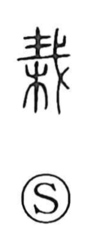

栽

Uncategorized
Kun: ueru | On: sai
to plant ・ planting ・ cultivation
Explanation
栽 is a phono-semantic character. The left side is 木, indicating a tree. The right side is the phonetic element read sai, depicting a halberd to which a sacred sign (才) has been affixed. In ancient ritual this marked weapon served to drive away impurity and inaugurate undertakings—much like attaching a protective amulet at a shrine today. With 木 added, the character originally pictured the ceremonial planting of a tree, and by extension came to mean simply “to plant” and “planting/cultivation.”